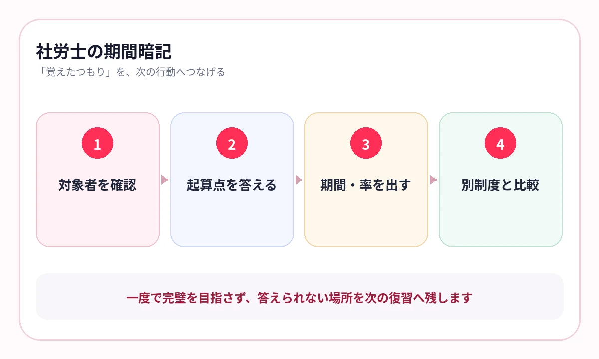

法律ごとには覚えたのに、似た給付・期限・率を横断すると混ざっていませんか？
社労士試験では、労働法と社会保険法をまたいで、多くの制度、給付、手続、数字を扱います。
一つの法律を読み終えるだけでは、似た制度の区別が残りません。対象者、起算点、期間、率を同じ軸で横に並べることで、選択肢の違いが見えます。
試験科目を、共通する軸で見る
社労士試験は、労働基準法・安全衛生法、労災、雇用、一般常識、健康保険、厚生年金、国民年金などを、選択式と択一式で問います。
科目ごとに別のノートを作るだけでなく、給付、届出、期間、率など共通のテーマでも横断します。
数字は「起算点」から答える
期間を覚えるとき、日数や月数だけでは不十分です。同じ「〇日以内」でも、何が起きた日から数えるかで答えが変わります。
- 誰が行う手続か
- 何が起きたときか
- いつを起算点にするか
- 何日・何か月・何年か
- 延長・例外・除外期間はあるか
期間の問題は、数字より先に起算点を答えてください。
{kind=link}

同じテーマを、法律横断で比較する
| 横断テーマ | 比較する内容 |
|---|---|
| 給付 | 対象者、支給要件、待期・期間、額・率 |
| 届出 | 届出者、提出先、期限、添付・手続 |
| 保険料 | 負担者、算定基礎、率、納付時期 |
| 適用 | 強制・任意、事業・労働者の範囲、除外 |
法律ごとの縦の理解ができたら、同じテーマを横に並べます。選択肢の一部だけが別制度へ入れ替わる問題に強くなります。
実例：標準報酬月額の3つの改定は「きっかけ」と「適用開始」で分ける
どれも報酬を基に標準報酬月額を見直しますが、いつ、なぜ改定するかが違います。対象月だけでなく、改定の入口から並べてください。
| 制度 | きっかけ | 見る報酬 | 適用開始 |
|---|---|---|---|
| 定時決定 | 毎年の定例見直し | 原則4月・5月・6月 | 9月から翌年8月 |
| 随時改定 | 固定的賃金が変動し、要件を満たす | 変動月から継続3か月 | 変動後の報酬を初めて受けた月から4か月目 |
| 育児休業等終了時改定 | 3歳未満の子を養育する被保険者の申出 | 育休終了翌月以後3か月 | その3か月を見た後の4か月目 |
選択肢に「毎年」「4月から6月」があれば定時決定、「固定的賃金の変動」「2等級以上」なら随時改定、「3歳未満」「申出」なら育児休業等終了時改定を確認します。
数字は同じ3か月でも、始まる理由が違います。起算点を答えてから期間を当てはめてください。
横にスワイプして画像を確認できます


選択式は、空欄の前後まで残す
選択式は、語句だけの単語カードより、条文・説明文の前後を含めて答える練習が向いています。
- 空欄の主語は誰か
- 前後の条件は何か
- 同義語ではなく正確な用語は何か
- 別法律の似た表現と何が違うか
テキストの一文や比較表で重要語句を隠し、文章の流れから正確な言葉を取り出します。
法改正と年度を、教材名へ残す
社労士は法改正の影響が大きい試験です。受験年度に対応した教材へ更新し、数字や要件が変わった古いページを残さないことが重要です。
AI暗記シートでは、紙教材やPDFを取り込み、法律名・横断テーマ・年度で保存できます。「あやしい」制度を弱点優先で出し、通勤時間に正確な語句と数字を確認します。
- 健保｜傷病手当金｜要件・期間｜2026
- 雇用｜基本手当｜給付制限｜2026
- 年金横断｜被保険者区分｜比較
- 届出横断｜提出者・期限｜要復習
よくある質問
科目ごとの勉強と横断学習はどちらを先にしますか？
まず各法律の仕組みを理解し、その後に給付・届出・保険料・適用など共通テーマで横断比較します。
数字一覧を作れば十分ですか？
数字に対象者、起算点、手続、例外を付けて答えられる形にします。
法改正前の教材は残してもよいですか？
混同の原因になるため、原則として受験年度対応の教材へ更新し、古い内容は削除または明確に分離します。
定時決定と随時改定はどう見分けますか？
定時決定は毎年4月から6月の報酬を基に9月から改定します。随時改定は固定的賃金の変動などの要件を満たしたとき、変動後3か月を見て4か月目から改定します。
参考情報
試験範囲・制度は公式情報、復習方法は学習科学の研究を参照しています。
似た制度を、法律横断で区別する
起算点・期間・率を、正確に反復
社労士教材の重要語句と数字を隠し、法律名・横断テーマ・年度で保存。弱点制度を通勤中に繰り返せます。
iPhone・iPad対応／3枚まで無料保存／継続利用は800円の買い切り